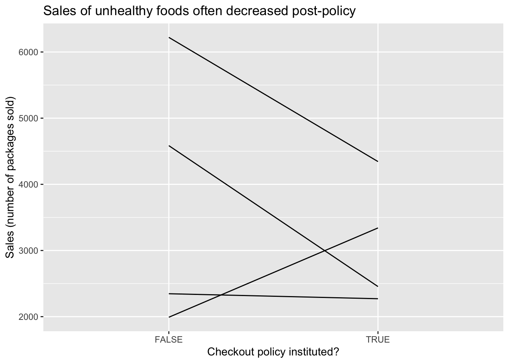
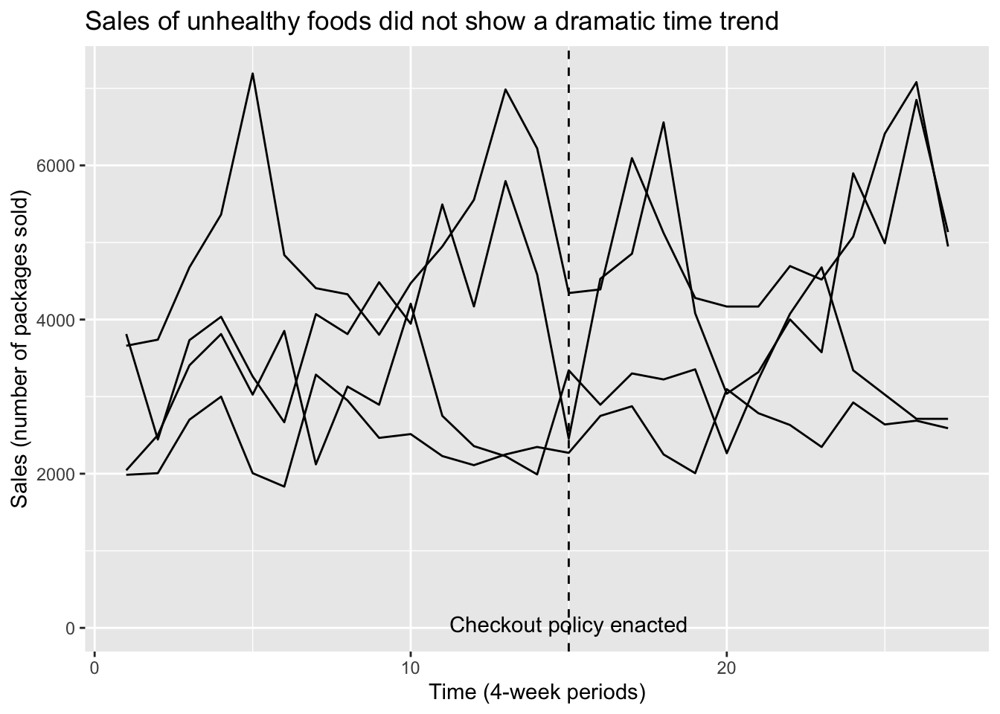
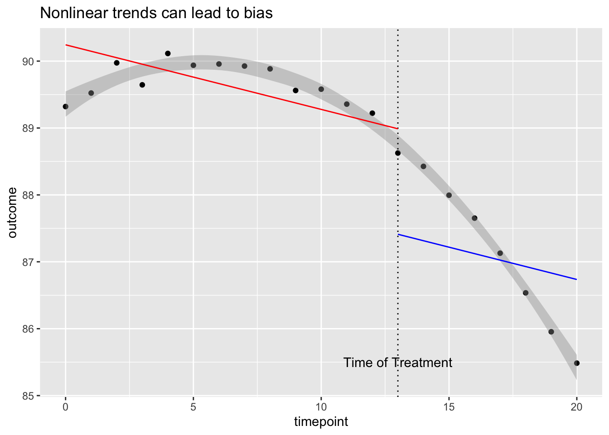
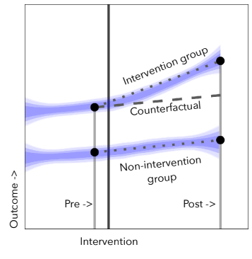
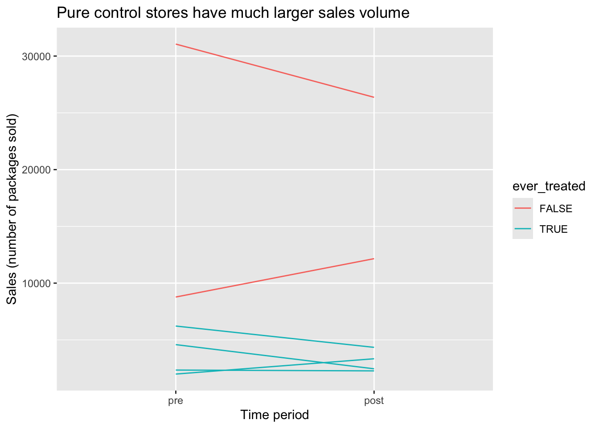

| Student | date | GPA | Years exp | Rec | Cal Grad | Good Job |
|---|---|---|---|---|---|---|
| Evelyn Fix | June 2022 | 3.9 | 3 | strong | yes | yes |
| Evelyn Fix | April 2022 | 3.9 | 3 | strong | no | no |
Using Time to Measure Causal Effects
Pre/post, interrupted time series, and difference-in-difference designs
Causality and variation across time
When we don’t have access to a randomized experiment or a natural experiment, creative methods are required to extract evidence about causal claims from data. In the last set of notes, we looked at matching methods, which approximate unobserved counterfactual outcomes by identifying different subjects that appear very similar based on their covariate values. Today we think about a very different way to approximate missing counterfactuals: repeated observations for the same subject at different times with different treatments.
Same unit at different times
Let’s say that we collected data from Evelyn Fix before and after she graduated from Cal.
Here, the unit of observation is a student at a particular time, which allows us to compare Evelyn before and after graduating from Cal. How close a counterfactual is pre-graduation Evelyn? Keep in mind the true counterfactual would be the alternate universe where everything about the world is the same but for one thing: Evelyn hadn’t graduated from Cal. Is everything the same in this pre-graduation world?
The answer may be yes. Here we see her GPA is unchanged, she hasn’t gained any more work experience, and she’s sending out the same strong letter of recommendation. If these are the only other variables involved in getting a good job, then this would be good evidence that the graduation is the cause of the good job.
But what if her GPA had inched up that final semester? Or what if the jobs that she applied for pre-graduation were simply not as good as the jobs that she applied for after graduation? In this setting, there could be multiple reasons that she got the good job because we haven’t isolated the variable of interest: graduating from Cal.
Data with repeated measures for individual subjects is called longitudinal or panel data. There are several study designs that rely upon this structure to interrogate causal claims. Pre/post designs use two measurements for each subject, one with the treatment and one without, to measure a causal effect. Interrupted time series designs are similar but use multiple observations before and after each unit enters treatment to estimate counterfactual trends. Finally, difference in difference designs unite some of the benefits of matching and pre/post designs.
Do supermarket checkout displays cause unhealthy eating?
You (as well as any small children you know) have probably noticed that supermarket checkout lines often feature a display of candy, soda, chips, or other “less-healthy” snacks. Government agencies and consumer advocacy groups have called for supermarket chains to remove such displays, claiming that they lead to unhealthy eating choices and poorer health for consumers. In the United Kingdom, some supermarkets have responded by instituting ‘checkout line’ policies under which candy is removed and replaced with healthier options. We will look at data2 on the number of purchases of unhealthy foods at four stores that instituted such a policy in the mid-2010s. Purchases are measured both before and after the policy is instituted.
store_id sales checkout_policy
1 243 4585 FALSE
2 243 2455 TRUE
3 245 6221 FALSE
4 245 4344 TRUE
5 246 1991 FALSE
6 246 3341 TRUE
7 247 2347 FALSE
8 247 2271 TRUEThe causal claim here is that consumers would have purchased fewer unhealthy snacks if the candy display had been removed from the checkout line (the broader claims about the impact of this change on public health are not things we can test with data from the supermarkets alone). A great way to test this theory might be to randomly assign some supermarkets to remove their checkout displays and others to keep theirs, and compare purchases. Unfortunately that study was not conducted, and it’s not clear that these stores decided to institute their policies in a quasi-random way (e.g. what if only the stores selling very low levels of candy agreed to participate?). We could also consider matching stores with the policy to those without the policy and comparing their sales. But we our dataset doesn’t include many store covariates, and in general datasets like this one may only include stores that instituted the policy.
Pre/post design
Instead, we will focus on comparing the same stores before and after the policy change, an idea called a pre/post design.
- Pre/post design
- A study in which a group of units receiving a treatment is compared to earlier versions of themselves before treatment occurred.
A pre/post design takes the simple approach of subtracting the pre-treatment value from the post-treatment value for each store and taking the average. The following plot shows the change in sales for each of four stores in the data, and the pre/post estimate is computed below.

Response: sales (numeric)
Explanatory: checkout_policy (factor)
# A tibble: 1 × 1
stat
<dbl>
1 -683.Pros and cons of pre/post
To see the benefits of a pre/post design, think about what covariate balance looks like on store covariates such as size, geographic location (urban/suburban/rural), demographics of surrounding neighborhood (senior citizens vs. young professionals vs. families with children), and staffing. Even though we don’t have these covariates measured in our dataset, we can be pretty confident that most of them are perfectly or near-perfectly balanced.
Covariate balance also helps identify the biggest weakness of a pre/post design. What would the SMD look like for time (if we measured as a numeric variable counting the number of months starting from January 2016)? It would probably be quite large since the treated observations are systematically later than the control observations. So although most covariates will be well-controlled, pre/post designs are highly susceptible to time trends in the outcome (or other outcome-related covariates that shift over time). For example, what if one of the stores rolled out its policy on January 1st, so that the four weeks prior to the policy included the winter holidays, when British consumers traditionally buy and consume a lot of sweets, and the four weeks immediately following the policy included the beginning of the year when many people are starting diet and exercise plans? A matched study could avoid this particular issue by comparing different stores, one with the policy and one without, during the same time period. So while matched studies require no unmeasured confounding, pre/post designs require counterfactual outcomes and unmeasured confounding to be stable across time.
Dealing with effects of time
Suppose there is a gradual downward trend in purchase of unhealthy snacks over time, as British consumers become better informed about health risks and gradually switch to healthier options. This is a problem for our pre/post design, which can’t distinguish between reductions in sales due to the nationwide trend and reductions in sales due to the policy change that we’re interested in. Fortunately if we have the right kind of additional data available we can attempt to identify the time trend and distinguish it from our treatment effect. We’ll focus on two approaches, each of which relies on a different kind of additional data.
More timepoints: interrupted time series
First note that in addition to measuring sales in the four-week periods immediately before and after the policy change, we have data on several more four-week periods going further back in time before the change, and going further forward in time after the change. We can now extend the earlier plot for the pre/post design to include the additional timepoints.

By looking at the changes over time before and after the time, we are able to get a sense for the time trend; in addition, by looking at the sudden shift in the line’s height that occurs at the time of the policy change, we can get a separate sense for the average treatment effect. Because the treatment effect “interrupts” the pattern of the smooth time trend, this design is known as an interrupted time series.
To estimate the treatment effect after separating out the trend, we can fit a regression model for sales with two independent variables, a numeric variable for time period and a binary indicator for whether the policy change has been instituted:
Call:
lm(formula = sales ~ checkout_policy + time, data = checkout_its)
Coefficients:
(Intercept) checkout_policyTRUE time
3109.49 -570.74 62.79 Fitting this model to all our observations will give us two parallel lines, one for the before-treatment periods (drawn in red) and one for the after-treatment periods (drawn in blue).

The distance from the red line to the blue line is given by the coefficient of checkout_policy and is our estimate of the average treatment effect. You can think of the dotted red line as the (counterfactual) version of sales had the policy not been instituted, to which we are comparing the actual post-treatment sales (in solid blue).
Interrupted time series do not require unobserved confounders to be stable over time, but they do require changes in unobserved confounders to affect outcomes only linearly (i.e. with a constant slope). To see why this assumption is important, consider the following hypothetical analysis:

Here the gray band gives the shape of the actual pattern in the data, which appears to be a smooth and gradually decreasing curve. Although there is no apparent treatment effect here (the pattern doesn’t experience any jumps or dips at the time of treatment) fitting straight lines to the curve incorrectly suggests that a large negative treatment effect (the large gap between the red and blue lines) is present.
Pure controls: difference-in-difference design
The interrupted time series design relies on additional observations in pre and/or post periods to separate a time trend from a treatment effect. Another kind of data that can help us is data from additional stores during the same time periods that never institute a checkout policy. Clearly these stores do not experience a treatment effect, but if they are subject to the same time trend as the treated stores, we can use them to estimate the time trend. Here is a plot illustrating this idea:
3
The dashed line represents a counterfactual average outcome for the treated units if they had not received treatment, and we are interested in learning the difference between this dashed line and the actual outcome for the intervention group. Although we don’t have multiple observations prior to treatment to estimate the slope of the dashed line anymore, we can learn it by looking at the pre/post differences in the control group below. We can then get an effect estimate by subtracting the pure control pre/post difference in the outcome \(Y\) from the treated group’s pre/post difference in outcome \(Y\):
\[ \text{Estimated effect} = (\overline{Y}^{treat}_{post} - \overline{Y}^{treat}_{pre}) - (\overline{Y}^{control}_{post} - \overline{Y}^{ control}_{pre}) \]
This is called a difference-in-difference design. You can think of it as a combination of the matching approach from the last set of notes and the panel data approaches from these set of notes, since it takes advantages of comparisons across both units and time. It doesn’t require that time trends be linear as the interrupted time series does (since we don’t have to rely on a constant slope across previous time points), but it does require that the time trend is the same in the pure control stores as in the treated stores, an assumption known as parallel trends.
We now test out difference-in-difference analysis on the supermarket checkout data. We start by making a pre/post plot with our four treated stores and two additional stores that never instituted a checkout policy 4.

One thing that immediately jumps out about this plot is that both pure control stores have much larger sales volume in general than the treated stores. This probably means that the pure control stores are much bigger than their treated counterparts. This would be very bad news if we were trying to match treated stores in the post period to control stores in the post period, since we wouldn’t succeed in finding close pairs. Fortunately we don’t need to construct close matched pairs for this design. We do need to believe parallel counterfactual time trends (on average) between the treated stores and the pure control stores if neither were to be treated, but this seems more plausible based on the plot5.
We now compute pre/post differences for the treated stores and for the pure control stores, and take their difference to get our effect estimate.
# A tibble: 2 × 2
ever_treated `Average Pre/Post Difference in Sales`
<lgl> <dbl>
1 FALSE -655
2 TRUE -683.Response: sales_diff (numeric)
Explanatory: ever_treated (factor)
# A tibble: 1 × 1
stat
<dbl>
1 -28.2Dependence in panel data and matched designs
So far we have focused on estimating effects using panel data. We may also be interested in creating confidence intervals for our effect estimates and conducting hypothesis tests to determine whether they differ significantly from zero. At a high level, we can use the same processes as in the generalization unit.
However, we have to be careful because in panel data it is usually not reasonable to think of our individual observations as a simple random sample or as independent and identically distributed draws from a population. Instead, our data come in groups of repeated observations for an individual subject, which will tend to be more similar to each other than to observations from other subjects. This has implications for how we bootstrap or permute our data.
For example, if we simply permuted all sales values in our checkout policy dataset, the values we observed for a single store might be scattered across several different stores instead of staying together. Similarly, if we took a bootstrap sample from all observations, we might end up with three or more observations from some stores and only one for others. This would make it difficult to compute a pre/post estimate!
The simplest solution is to aggregate our data to form a new data frame with one row per unique subject, then permute or bootstrap the rows of this new data frame. For pre/post and difference in difference designs, the natural way to aggregate is to take each subject’s pre/post difference, since the effect estimate is simply an average (or a difference in means) of these quantities across unique subjects. 6
A similar strategy is recommended for matching estimators. Although matched subjects are not actually different copies of the same person, they have been chosen to be more similar to each other than to other subjects; because of this we should permute or bootstrap matched differences rather than individual outcomes.
The Ideas in Code
We use several different filterings of the checkout data frame to do the analyses above. Here we define two of them, checkout_its (which excludes pure controls) and checkout_w_control (which excludes timepoints besides those immediately before and after treatment and relabels these timepoints as ‘pre’ and ‘post’).
To make plots for panel data designs, it is often helpful to use the geom_line() geometry, mapping the unique subject ID to the group argument to get a separate line for each unit.
checkout_its |>
ggplot(mapping = aes(x = time, y = sales, group = store_id)) +
geom_line() + labs(title = 'Sales of unhealthy foods did not show a dramatic time trend',
x = 'Time (4-week periods)',
y = 'Sales (number of packages sold)') +
geom_vline(xintercept = 15, linetype = 2) +
annotate('text', label = 'Checkout policy enacted', x = 15, y = 50)
To do a hypothesis test or create a confidence interval, we must usually begin by transforming the data frame so each row represents a different unique subject. The pivot_wider command does this, creating new pre- and post- versions of our other variables for ecah store. We call the new data frame checkout_by_store. This code chunk shows how we can calculate the effect estimates from store-specific sales differences using infer commands.
#create new data frame with one row per store and pre/post sales difference
checkout_by_store <- checkout_w_control |>
pivot_wider(names_from = time, values_from = c(sales,checkout_policy)) |>
mutate('ever_treated' = checkout_policy_post,
'sales_diff' = sales_post - sales_pre)
checkout_by_store |>
group_by(ever_treated) |>
summarize('Average Pre/Post Difference in Sales' = mean(sales_diff))# A tibble: 2 × 2
ever_treated `Average Pre/Post Difference in Sales`
<lgl> <dbl>
1 FALSE -655
2 TRUE -683.checkout_by_store |>
specify(response = sales_diff,
explanatory = ever_treated) |>
calculate(stat = 'diff in means', order = c('TRUE', 'FALSE'))Response: sales_diff (numeric)
Explanatory: ever_treated (factor)
# A tibble: 1 × 1
stat
<dbl>
1 -28.2This code chunk shows how we can create a bootstrap confidence interval for our difference in difference estimate by resampling store differences.
set.seed(2024-3-28)
bootstrap_did <- checkout_by_store |>
specify(response = sales_diff,
explanatory = ever_treated) |>
generate(reps = 500, type = 'bootstrap') |>
calculate(stat = 'diff in means', order = c('TRUE', 'FALSE'))
bootstrap_confint <- bootstrap_did |>
get_confidence_interval(level = 0.95)
bootstrap_did |>
visualize() +
shade_confidence_interval(bootstrap_confint)If we want a hypothesis test instead, we could instead specify an independence null hypothesis for checkout_by_store with the same response and explanatory variables, and generate null draws with generate() using the type = permute argument.
Summary
Repeated observations for the same subject across time can be a powerful tool for developing arguments about causal claims. When all units are measured once before and once after treatment, a pre/post design helps address concerns about unobserved confounders as long as the counterfactual outcomes and any unobserved confounders remain the same across time. Even when there is some effect of time on the outcome, we can attempt to estimate that time effect and separate it from our effect estimate, either by using additional measurements for each subject (interrupted time series) or by using subjects who never receive treatment (difference-in-difference). Like any non-randomized study, these approaches require assumptions about the true process that generated the data that you should think carefully about. It is also important to be careful about confidence interval construction for designs with repeated measures to make sure bootstrapped datasets are similar to the original data.
Footnotes
Image from Shutterstock/SpeedKingz, obtained from Pawlowski, A. (Dec 2015). Kids can’t resist candy? Stores try junk food-free ‘healthy checkout lanes.’ Today.com. https://www.today.com/parents/kids-cant-resist-candy-stores-try-junk-food-free-healthy-t60621.↩︎
Data is a modified version of data used in Ejlerskov KT, Sharp SJ, Stead M, Adamson AJ, White M, Adams J. Supermarket policies on less-healthy food at checkouts: Natural experimental evaluation using interrupted time series analyses of purchases. PLoS Med. 2018 Dec 18;15(12). Accessed via a repository described in Turner, S. L., Korevaar, E., Karahalios, A., Forbes, A. B., & McKenzie, J. E. (2023). Interrupted time series datasets from studies investigating the impact of interventions or exposures in public health and social science: A data note. Available at ResearchSquare, https://doi.org/10.21203/rs.3.rs-3669411/v1.↩︎
Image from Haber, N. A., Clarke-Deelder, E., Salomon, J. A., Feller, A., & Stuart, E. A. (2021). Impact evaluation of coronavirus disease 2019 policy: A guide to common design issues. , 190(11), 2474-2486.↩︎
The original version of the supermarket checkout data does not actually contain pure controls, so observations for two control units have been synthetically generated for illustrative purposes.↩︎
We still might feel better about believing the parallel trends assumptions if pure control stores looked generally similar to treated stores in size and in other attributes. If we had a larger set of pure controls available and more store covariates measured, we could check covariate balance and conduct matching first, then run the difference-in-difference design on the pre/post data from the matched subjects only.↩︎
For interrupted time series, the regression model we estimate cannot easily be written in terms of unit differences. Hypothesis testing and confidence intervals require instead that groups of observations be permuted or resampled in a specific pattern, using tools such as clustered standard errors or the block bootstrap. These more complex procedures cannot be carried out using the
inferpackage and we won’t cover them in this class.↩︎